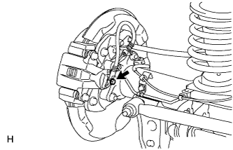
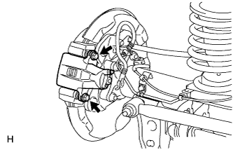
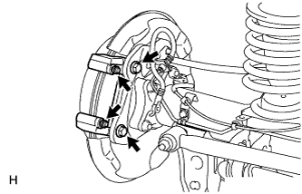
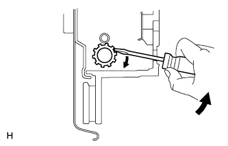

REAR BRAKE > REMOVAL |
| 1. REMOVE REAR WHEEL |
| 2. DRAIN BRAKE FLUID |
| 3. DISCONNECT REAR FLEXIBLE HOSE LH |
 |
Remove the union bolt and gasket, and then disconnect the flexible hose from the rear disc brake cylinder. Use a container to catch brake fluid as it drains out.
| 4. REMOVE REAR DISC BRAKE CYLINDER ASSEMBLY LH |
 |
Remove the 2 slide pins.
Remove the cylinder from the rear disc brake cylinder mounting.
| 5. REMOVE REAR DISC BRAKE PAD |
Remove the 2 brake pads from the rear disc brake cylinder mounting.
| 6. REMOVE REAR DISC BRAKE ANTI-SQUEAL SHIM KIT |
Remove the anti-squeal shims from each disc brake pad.
| 7. REMOVE REAR DISC BRAKE PAD WEAR INDICATOR PLATE |
Remove the pad wear indicator plate from the inner side disc brake pad.
| 8. REMOVE REAR NO. 1 DISC BRAKE PAD SUPPORT PLATE |
Remove the 2 pad support plates from the rear disc brake cylinder mounting.
| 9. REMOVE REAR NO. 2 DISC BRAKE PAD SUPPORT PLATE |
Remove the 2 pad support plates from the rear disc brake cylinder mounting.
| 10. REMOVE REAR DISC BRAKE CYLINDER MOUNTING LH |
 |
Remove the 2 bolts and rear disc brake cylinder mounting.
Remove the cylinder slide bush and boot from the rear disc brake cylinder mounting.
| 11. REMOVE PARKING BRAKE SHOE ADJUSTING HOLE PLUG |
| 12. REMOVE REAR DISC |
 |
Put matchmarks on the rear disc and axle hub if planning to reuse the disc.
 |
Turn the shoe adjuster as shown in the illustration until the disc turns freely, and then remove the disc.